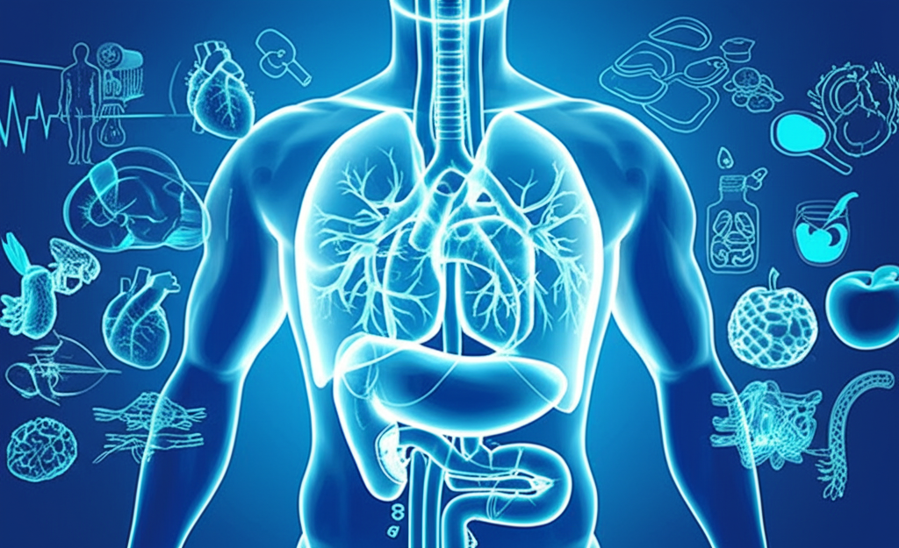

# 近期健康醫療資訊彙總與分析
## 引言
近期健康醫療新聞聚焦於高血壓、心血管疾病、癌症預防與治療、以及健康生活方式等議題。本文將針對相關資訊進行整理與分析，旨在提供讀者更全面的健康知識，並提升自我健康管理的意識。新聞來源包含健康醫療網、YouTube、NOW健康、衛生福利部胸腔病院、世界新聞網、禁聞網、東方日報、Yahoo新聞等，涵蓋了多元視角。
## 主體內容
### 第一點：高血壓與心血管疾病的預防與控制
多則新聞提到高血壓與心血管疾病的關聯性。主動脈剝離與高血壓密切相關，而得舒飲食被認為有助於控制高血壓。衛生福利部胸腔病院提到，特定藥品適用於以Olmesartan、Amlodipine、Hydrochlorothiazide其中兩種成分合併治療，仍無法有效控制血壓的高血壓病患。此外，有報導指出，低鈉鹽可能影響血壓控制，特別是對於高血壓患者。
**分析：** 高血壓是心血管疾病的重要危險因子，控制血壓對於預防相關疾病至關重要。除了藥物控制外，飲食調整（如得舒飲食、控制鈉攝取）也是重要的手段。民眾應定期量測血壓，並諮詢醫師意見，制定適合自己的血壓控制方案。
### 第二點：癌症的早期發現與治療
早期胃癌內視鏡治療免開刀、術後不用化療的消息引起關注，顯示微創手術在癌症治療上的進展。 常吃魚護心更長壽？ 5種魚真的要少吃！ 反增致癌、傷肝、高血壓風險....這則新聞提到特定魚類可能增加致癌風險，提醒民眾注意飲食選擇。
**分析：** 癌症的早期發現與早期治療對於提高治癒率至關重要。定期健康檢查可以幫助及早發現潛在的癌症風險。同時，均衡飲食，避免攝取過多可能增加致癌風險的食物，有助於降低罹癌風險。
### 第三點：健康生活方式與認知障礙症風險
醫師個人養生經驗！拒吃2食物竟是關鍵親授「長壽健康呷百二」8法則的文章強調健康飲食、運動、不抽菸、良好睡眠等健康生活方式的重要性。每3秒多一人患上認知障礙症50歲起要留意的新聞則指出，血壓高、睡眠少或有遺傳病史的人士屬於認知障礙症的高危族群。
**分析：** 健康的生活方式不僅可以預防心血管疾病和癌症，還有助於降低罹患認知障礙症的風險。民眾應從飲食、運動、睡眠等方面入手，養成良好的生活習慣，並定期進行健康檢查，以維持身心健康。
## 結論
綜上所述，近期健康醫療資訊主要圍繞高血壓與心血管疾病的預防與控制、癌症的早期發現與治療、以及健康生活方式對於預防慢性疾病的重要性。建議民眾應關注相關資訊，積極採取預防措施，並養成良好的生活習慣，以提升整體健康水平。